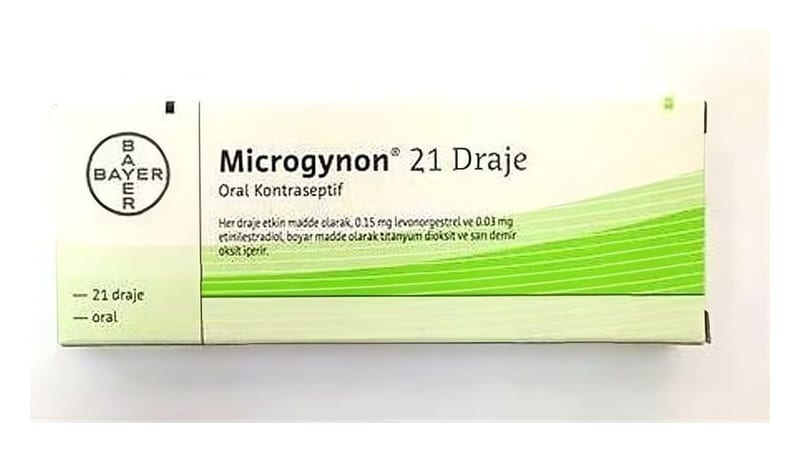

Microgynon 150 mcg/30 mcg Kaplı Tablet, 21 Adet

Ne için kullanılır
KT · Bölüm 1• MICROGYNON, 21 tabletlik ambalajlarda bulunur ve tabletler bej renktedir. Her bir kaplı tablet etkin madde olarak 0,15 mg levonorgestrel ve 0,03 mg etinilestradiol içerir. MICROGYNON laktoz monohidrat (sığır kaynaklı) içerir. • Östrojen ve progesteron hormonlarını içeren ve ağız yoluyla alınan doğum kontrol haplarına “Kombine Oral Kontraseptif (KOK)” denir. MICROGYNON da bu grupta yer alan bir ilaçtır. • MICROGYNON’un içindeki levonorgestrel ve etinilestradiol hormonları üç şekilde çalışarak hamile kalmanızı engeller. Yumurtalıklarınızdan yumurtanın bırakılmasını engeller, servikal mukusu (sıvıyı) koyulaştırır, bu sayede spermin ovuma ulaşması engellenir ve rahim iç zarını da incelterek döllenmiş bir yumurtanın yerleşmesini engeller. • MICROGYNON, gebeliği önlemek amacıyla kullanılır. • MICROGYNON 21 günlük haptır, 21 gün boyunca her gün bir tane alınır, sonraki 7 gün boyunca alınmaz.
MICROGYNON alımının faydaları aşağıdakileri içermektedir: • Doğru şekilde kullanıldığında en güvenilir geri dönüşümlü doğum kontrol yöntemlerinden biridir. • Cinsel aktiviteye engel olmaz. • Adetlerinizi genellikle düzenli, daha hafif ve daha ağrısız hale getirir. • Adet öncesi belirtilerinize yardımcı olabilir.
MICROGYNON sizi klamidya veya HIV gibi cinsel yolla bulaşan hastalıklara karşı korumaz. Sadece kondomlar (prezervatif) bunu yapmakta yardımcı olabilir.
Hamileliği engellemek için MICROGYNON anlatıldığı gibi kullanılmalıdır.